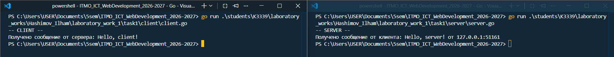
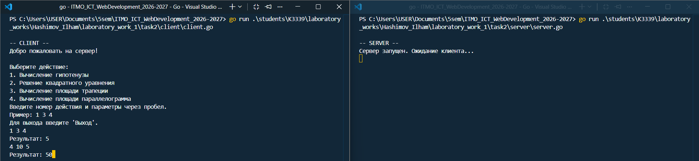
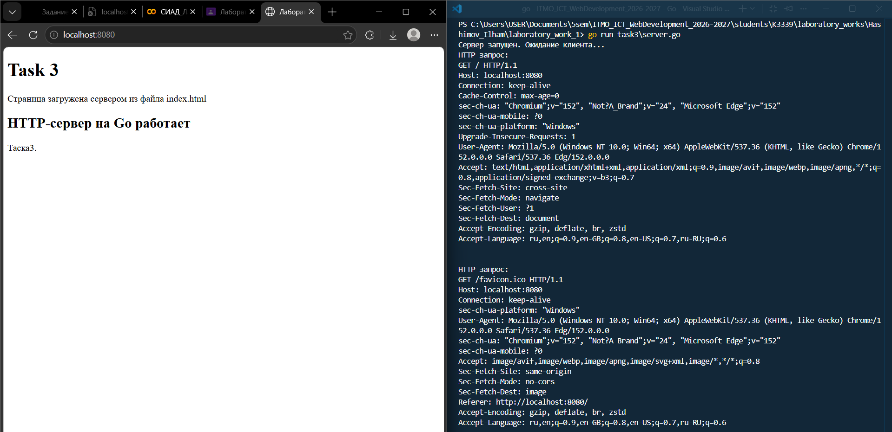
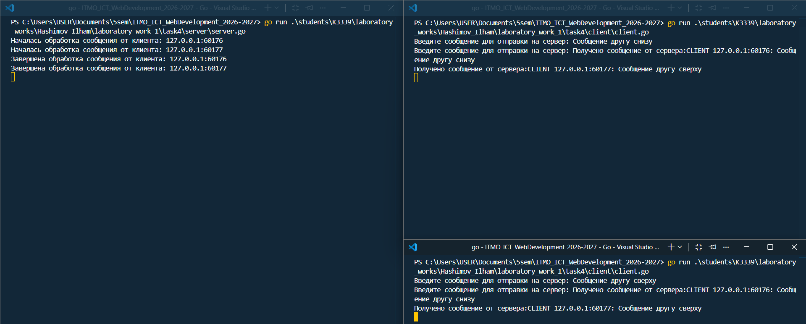
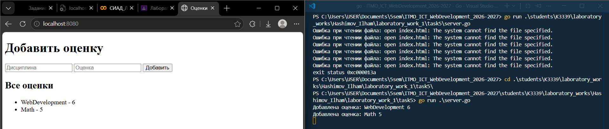

Лабораторная работа №1
Task 1. UDP клиент и сервер
В первой задаче реализован простой обмен сообщениями по UDP.
Сервер
Сначала создаётся UDP-адрес и сервер начинает слушать localhost:8080:
addr, err := net.ResolveUDPAddr("udp", "localhost:8080")
conn, err := net.ListenUDP("udp", addr)
ResolveUDPAddr меняет строку адреса в UDPAddr, а ListenUDP создаёт UDP-сокет сервера.
Далее сервер ждёт сообщение от клиента:
buffer := make([]byte, 1024)
n, clientAddr, err := conn.ReadFromUDP(buffer)
ReadFromUDP возвращает количество полученных байтов и адрес клиента, который отправил сообщение.
После получения сервер выводит сообщение и отправляет ответ обратно этому же клиенту:
fmt.Println("Получено сообщение от клиента:", string(buffer[:n]), "от", clientAddr)
_, err = conn.WriteToUDP([]byte("Hello, client!"), clientAddr)
Клиент
Клиент также получает адрес сервера:
addr, err := net.ResolveUDPAddr("udp", "localhost:8080")
conn, err := net.DialUDP("udp", nil, addr)
DialUDP создаёт UDP-соединение с указанным сервером.
Сообщение отправляется через Write:
_, err = conn.Write([]byte("Hello, server!"))
После этого клиент ждёт ответ:
buffer := make([]byte, 1024)
n, err := conn.Read(buffer)
И выводит только реально полученные байты:
fmt.Println("Получено сообщение от сервера:", string(buffer[:n]))
Скриншот

Task 2. TCP сервер с вычислениями
Во второй задаче используется TCP. Клиент выбирает математическую операцию и отправляет параметры серверу.
Подключение сервера
Сервер создаёт TCP-адрес и начинает слушать порт:
addr, err := net.ResolveTCPAddr("tcp", "localhost:8080")
listener, err := net.ListenTCP("tcp", addr)
ListenTCP создаёт серверного TCP-слушателя.
После этого сервер принимает соединение клиента:
clientConn, err := listener.AcceptTCP()
defer clientConn.Close()
AcceptTCP ждёт нового подключения и возвращает отдельное соединение с конкретным клиентом.
Подключение клиента
Клиент подключается к серверу через:
addr, err := net.ResolveTCPAddr("tcp", "localhost:8080")
conn, err := net.DialTCP("tcp", nil, addr)
DialTCP устанавливает TCP-соединение с сервером.
Отправка операции
Клиент получает номер операции и параметры из консоли. Например для операций с двумя аргументами:
fmt.Scan(&a, &b)
message = fmt.Sprintf("%s %v %v", operation, a, b)
После этого строка отправляется серверу:
_, err = conn.Write([]byte(message))
На сервере сообщение преобразуется в строку и разбивается по пробелам:
message := strings.TrimSpace(string(buf[:n]))
parts := strings.Fields(message)
Например строка:
1 3 4
после strings.Fields превращается в:
["1", "3", "4"]
Вычисления
Для параметров из строк в числа используется:
value, err := strconv.ParseFloat(param, 64)
После этого в зависимости от выбранной операции вызывается нужная функция.
Например вычисление гипотенузы:
func Pythagoras(a, b float64) float64 {
return math.Sqrt((a * a) + (b * b))
}
Также реализованы:
quadraticEquation(...)
areaOfTrapezoid(...)
areaOfParallelogram(...)
Выбор выполняется через switch внутри programCalculation.
Результат снова переводится в строку и отправляется клиенту:
Result = fmt.Sprintf("Результат: %v", outResult)
clientConn.Write([]byte(Result))
Скриншот

Task 3. HTTP-сервер
В третьей задаче сервер получает обычный HTTP-запрос от браузера и вручную формирует HTTP-ответ.
Запуск сервера
Используется обычный TCP-listener:
addr, err := net.ResolveTCPAddr("tcp", "localhost:8080")
listener, err := net.ListenTCP("tcp", addr)
Сервер постоянно принимает новые подключения:
for {
clientConn, err := listener.AcceptTCP()
handleClient(clientConn)
}
Чтение HTTP-запроса
В handleClient запрос браузера читается обычным Read:
buffer := make([]byte, 1024)
n, err := conn.Read(buffer)
После этого запрос можно вывести:
fmt.Println("HTTP запрос:")
fmt.Println(string(buffer[:n]))
В терминале будет видно примерно:
GET / HTTP/1.1
Host: localhost:8080
...
Чтение HTML-файла
HTML в отдельнОм index.html:
html, err := os.ReadFile("task3/index.html")
os.ReadFile читает содержимое файла и возвращает его как []byte.
Формирование HTTP-ответа
Ответ собирается вручную:
response := "HTTP/1.1 200 OK\r\n" +
"Content-Type: text/html\r\n" +
"Content-Length: " + fmt.Sprint(len(html)) + "\r\n"
После заголовков обязательно идёт пустая строка:
response += "\r\n" + string(html)
\r\n\r\n отделяет HTTP-заголовки от HTML-тела.
Готовый ответ отправляется браузеру:
_, err = conn.Write([]byte(response))
Скриншот

Task 4. Многопользовательский TCP-чат
В этой задаче один сервер обслуживает несколько клиентов одновременно.
Хранение клиентов
Все подключения сохраняются в срез:
var clients []*net.TCPConn
После подключения нового клиента он добавляется в этот срез:
clients = append(clients, clientConn)
Одновременная работа с несколькими клиентами
Для каждого клиента запускается отдельная goroutine:
go handleClient(clientConn)
Goroutine в Go дает выполнять обработку клиентов независимо друг от друга.
По смыслу здесь она заменяет отдельный поток обработки клиента, который часто используюь в Python.
Mutex
Несколько goroutine могут одновременно изменять clients, поэтому используется:
var mutex sync.Mutex
При изменении среза доступ временно блокируется:
mutex.Lock()
clients = append(clients, clientConn)
mutex.Unlock()
Это нужно, чтобы несколько goroutine не меняли общий срез одновременно.
Получение и рассылка сообщения
Сервер читает сообщение клиента:
n, err := clientConn.Read(buffer)
К сообщению добавляется адрес отправителя:
message := fmt.Sprintf(
"CLIENT %s: %s",
clientConn.RemoteAddr(),
string(buffer[:n]),
)
После этого вызывается:
broadcastMessage(message)
Внутри функция проходит по всем клиентам:
for _, client := range clients {
client.Write([]byte(message))
}
Таким образом одно сообщение отправляется всем подключённым клиентам.
Демонстрация одновременной обработки
В сервер добавлена задержка:
time.Sleep(10 * time.Second)
Она нужна только для демонстрации. Если два клиента отправят сообщения почти одновременно, в терминале будет видно, что обработка обоих сообщений уже началась до завершения первого.
Удаление клиента
При завершении соединения выполняется:
defer removeClient(clientConn)
Внутри нужный элемент удаляется из среза:
clients = append(clients[:i], clients[i+1:]...)
Клиент чата
Получение сообщений запускается отдельно:
go receiveMessages(conn)
А отправка остаётся в основной goroutine:
sendMessages(conn)
Так клиент может одновременно ждать сообщения от сервера и вводить свои.
Для ввода полной строки используется:
scanner := bufio.NewScanner(os.Stdin)
scanner.Scan()
message := scanner.Text()
Перед отправкой добавляется \n:
conn.Write([]byte(message + "\n"))
А получатель читает данные до \n:
reader := bufio.NewReader(conn)
message, err := reader.ReadString('\n')
Это нужно, потому что TCP передаёт поток байтов и сам не хранит границы отдельных сообщений.
Скриншот

Task 5. GET и POST запросы
В пятой задаче реализован простой веб-сервер. Он принимает дисциплину и оценку через POST, а через GET показывает сохранённые оценки.
Здесь используется более короткий вариант:
listener, err := net.Listen("tcp", "localhost:8080")
Подключение принимается так:
conn, err := listener.Accept()
handleClient(conn)
Определение GET или POST
Запрос читается:
n, err := conn.Read(buf)
request := string(buf[:n])
Далее начало запроса разбивается:
parts := strings.Fields(request)
method := strings.ToUpper(parts[0])
path := parts[1]
Для запроса:
GET / HTTP/1.1
получается:
method = GET
path = /
После этого вызывается нужный обработчик:
if method == "GET" {
handleGet(conn, path)
} else if method == "POST" {
handlePost(conn, path, request)
}
Хранение оценок
Одна запись представлена структурой:
type Grade struct {
Subject string
Grade string
}
Все записи хранятся в срезе:
var grades []Grade
POST
Тело HTTP-запроса находится после пустой строки. Поэтому запрос делится по:
parts := strings.Split(request, "\r\n\r\n")
body := parts[1]
Форма отправляет данные примерно так:
subject=Math&grade=5
Сначала разделяем разные поля:
fields := strings.Split(body, "&")
Получается:
subject=Math
grade=5
Затем каждое поле разделяется по =:
pair := strings.Split(field, "=")
После этого через switch значения записываются в переменные:
switch pair[0] {
case "subject":
subject = pair[1]
case "grade":
grade = pair[1]
}
Новая запись добавляется:
grades = append(grades, Grade{
Subject: subject,
Grade: grade,
})
После сохранения снова вызывается handleGet, чтобы сразу показать обновлённую страницу:
handleGet(conn, "/")
GET
HTML хранится отдельно в index.html:
html, err := os.ReadFile("index.html")
В файле есть место:
{{GRADES}}
Из сохранённых оценок создаются элементы списка:
for _, grade := range grades {
gradesHTML += "<li>" + grade.Subject + " - " + grade.Grade + "</li>"
}
После этого {{GRADES}} заменяется готовым HTML:
htmlString := strings.Replace(
string(html),
"{{GRADES}}",
gradesHTML,
1,
)
Дальше формируется обычный HTTP-ответ:
response := "HTTP/1.1 200 OK\r\n" +
"Content-Type: text/html; charset=utf-8\r\n" +
"Content-Length: " + strconv.Itoa(len(htmlString)) + "\r\n"
И добавляется тело:
response += "\r\n" + htmlString
После этого страница отправляется браузеру:
conn.Write([]byte(response))
Скриншоты

-